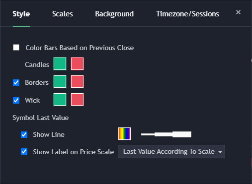
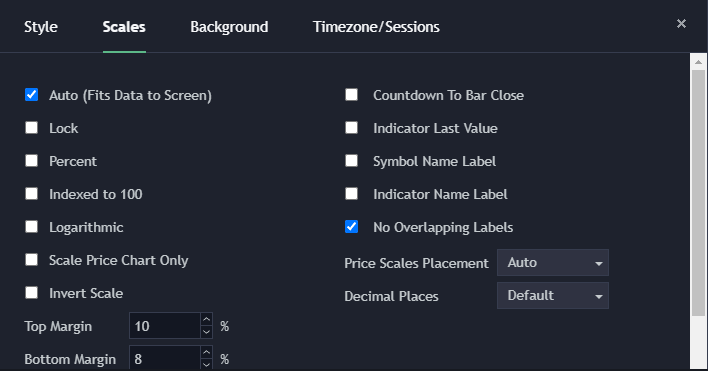
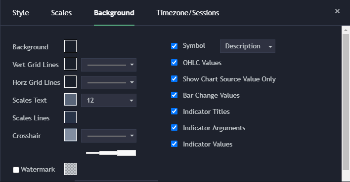
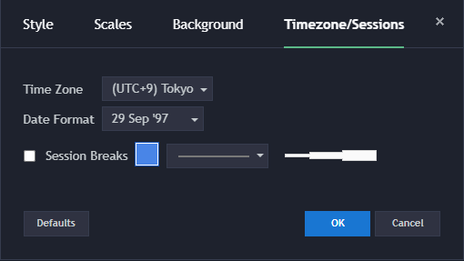
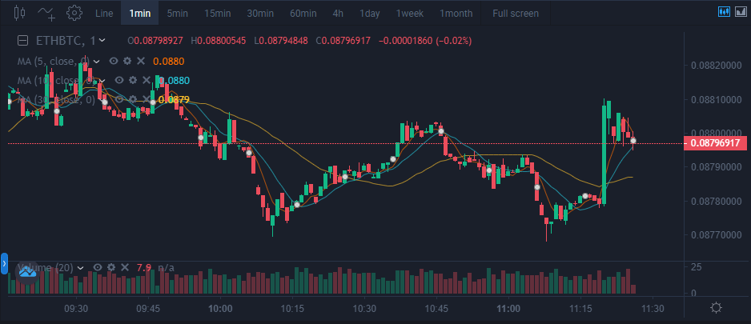
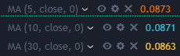
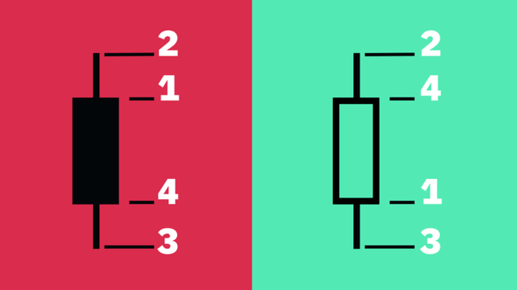
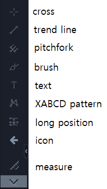

チャートはどうやって見るんですか？
3. チャート設定




- 設定通じてチャートを本人の好みのスタイルに合わせることができ、色の変更が可能です。
4. チャート[1分]

- 希望する分ごとに変化するチャートを選択することができます。
5. MA(Moving Average)

- MAは、終値を収集して平均値を次々と繋げて作った移動平均線です。
- 例えば、1日の時間帯で60日線は60個のキャンドル、つまり60日間の終値を基準に平均値を出したもので、
- 20日線は20個のキャンドル、つまり20日間の終値を基準に平均値を出したものです。
- MAは、設定でdayの変更、そして色の変更、隠し事などが可能です。
6. キャンドル チャート

- 寄り付き値((Open):特定タイムフレーム内に記録された資産の最初の取引価格。
- 高値(High):特定タイムフレーム内に記録された資産の最も高い取引価格。
- 低値(Low):特定タイムフレーム内に記録された資産の最も低い取引価格。
- 終り値(Close):特定タイムフレーム内に記録された資産の最後の取引価格。
7. Drawings Toolbar

- ボタンクリックすると隠れたDrawings Toolbarを見ることができます。
- Drawings Toolを利用してlineやtext、iconなどをチャートに表示することができます。